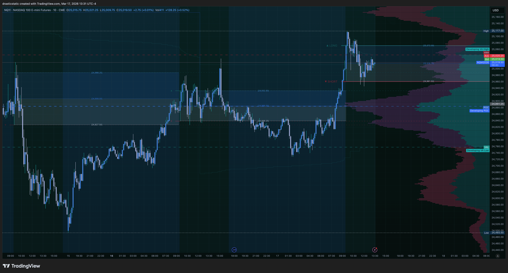
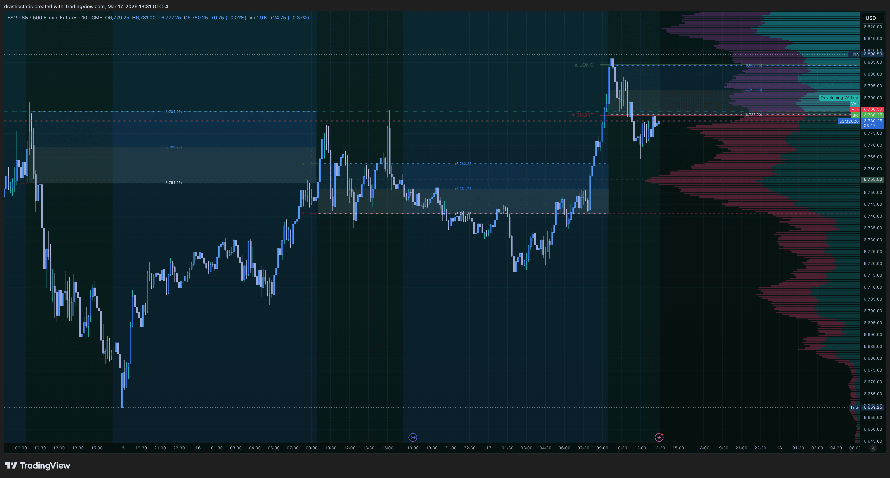
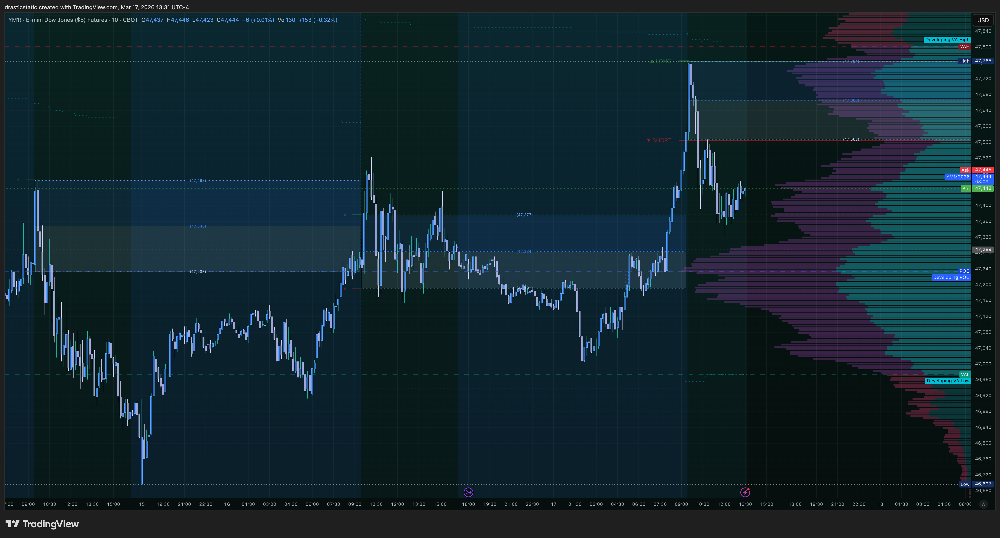
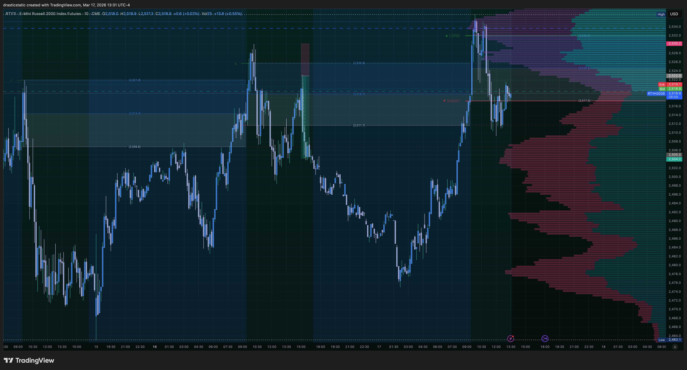

FCR Case Study Tracker
Real session-by-session documentation of the First Candle Rule — outcomes, patterns, and ZTH integration notes. Built from live coaching sessions and personal trading data, updated as new evidence emerges.
The Strategy
First Candle Rule — Core Definition
📐 FCR Rule
The 9:30 AM ET first 15-minute candle closes and establishes two rays: the HIGH ("long from here") and the LOW ("short from here"). The FCR signal is valid only once price displaces outside one of those rays after the first candle closes. Displacement ABOVE the HIGH = LONG signal. Displacement BELOW the LOW = SHORT signal. The first candle's color is irrelevant — displacement direction is the only signal.
🟢 LONG Signal
- Price closes a 5-min candle above the FCR HIGH ray
- Look for a 5-min FVG created by the displacement move
- Enter limit at the middle of the FVG, not market order
- Confirm: IT Foundation EMAs green dominant
- Confirm: SMT — are other indices also displacing higher?
🔴 SHORT Signal
- Price closes a 5-min candle below the FCR LOW ray
- Look for a 5-min FVG created by the displacement move
- Enter limit at the middle of the FVG, not market order
- Confirm: IT Foundation EMAs red dominant
- Confirm: SMT — are other indices also displacing lower?
⏱ Midline Context
- The midpoint of the FCR range (high + low ÷ 2) is a key decision zone within the box
- Price pivoting at the midline during the range-hold phase is a leading indicator of which side will break
- ZTH watches the midline for B&R and rejection setups while the market is ranging
🔗 ZTH Integration
- When FCR doesn't produce a clean displacement, ZTH treats the FCR box as a decision zone
- The HIGH ray and LOW ray both become potential rejection/entry levels
- False breakouts above HIGH or below LOW are ZTH SFP and B&R setups
- The FCR range also often contains a ZTH KEY or 5/5 level — those levels inside the box add confluence
Key Discovery
The Range-Hold Pattern
Observed across three consecutive sessions (Mar 13, 16, 17): when FCR displacement fails to hold cleanly, the market tends to range inside the FCR box and produce false breakouts on both sides before committing to direction.
FCR Range-Hold + False Breakouts
When the opening displacement fails to hold — price reverses back inside the FCR range shortly after the first candle closes — the market enters a decision phase. Both the HIGH and LOW rays become active rejection levels. Price probes one side, fails, reverses, probes the other side, fails again. This can repeat multiple times before a directional commitment forms. ZTH watches this phase for B&R and SFP setups at both rails. The coach who was going to be stopped out on the CL long had already moved to break even — a textbook response to a range-hold session.
Failed Long → Short Bias Inherited
When price displaces above the FCR HIGH and immediately reverses back inside the range — stopping out the long — the short-side bias inherits for the session. This does not mean a short entry is automatic. It means the burden of proof shifts: bulls had their chance, failed to hold it, and the market needs to prove it can reclaim the level before the long setup is valid again. The "short from here" LOW ray becomes the key level to watch for the remainder of the session.
News-Driven Fakeout → Real Displacement (Mar 4)
On volatile news mornings, all three first candles can close bearish — making a SHORT read feel obvious. But FCR only triggers on displacement, not candle color. Mar 4 produced bearish first candles across NQ/ES/YM, then reversed hard and displaced ABOVE the HIGH rays on all three. Anyone who read the candle color (not the displacement) was positioned the wrong way. The lesson: no matter how obvious the candle looks, wait for the body close above or below the ray.
FOMC Eve Behavior
Sessions the day before FOMC announcements show elevated false-breakout probability. Market participants are hedging and positioning rather than committing to clean directional moves. On Mar 17 (day before FOMC), the FCR failed long at open, all four indices produced lower highs and lower lows, but the session stayed messy with range probes and no clean A+ entry. Most coaches sat out until after the announcement. This is the right read: FOMC-eve is not a forced-entry session.
Visual Evidence
3-Day FCR Range Study — Mar 13, 16, 17
Christopher drew blue/grey FCR range boxes with midlines across three consecutive sessions on all four major equity index futures. Each box marks the 9:30 first-candle high-to-low range. The midline bisects each box at the 50% level. Notice how all four instruments show the same ranging behavior across all three sessions — this is a structural pattern, not instrument-specific noise.

NQ (Nasdaq) — Three FCR range boxes with midlines. Note how price respected the range boundaries across all three sessions with probe-and-reject behavior at both the HIGH and LOW rails.

ES (S&P 500) — Same three-day FCR range overlay. ES never reclaimed the Mar 17 FCR range after the morning rejection — strongest confirmation of short bias across the four indices.

YM (Dow Jones) — Three FCR box periods shown. YM broke below the Mar 17 FCR LOW ray earliest (10:55 ET), making it the first index to confirm short bias on that session.

RTY (Russell 2000) — The weakest instrument across all three FCR ranges. RTY's inability to sustain bounces back into the FCR box on Mar 17 was the clearest divergence signal of the session.
Session-by-Session
Case Study Log
Every session where FCR produced a meaningful read — clean signal, failed displacement, or range-hold. Expanded notes show the ZTH and IT context, coach decisions, and behavioral takeaways.
Failed Long → Short Developing (Scenario A Building)
FCR long from here failed at open. Lower highs + lower lows all session across all four indices. No entry — FOMC tomorrow.
Failed Long
Range-Hold
No Entry
▾
Failed Long → Short Developing (Scenario A Building)
FCR long from here failed at open. Lower highs + lower lows all session across all four indices. No entry — FOMC tomorrow.
What happened
- 9:30 open: STB coach took FCR long on displacement above HIGH ray. Stopped out — displacement failed to hold.
- ES: Below FCR "short from here" all session. Never reclaimed the range. Strongest short confirmation.
- YM: Below FCR since 10:55 ET — first index to confirm short side.
- RTY: Below FCR, briefly touched back at 11:50 ET then immediately rejected. Most bearish on bounces.
- NQ: Wicking below FCR "short from here" but not yet a clean body-close confirmation by 12:10 ET — the last piece needed for full Scenario A SHORT.
- All four: Lower highs and lower lows from session high — structural short bias confirmed in price action.
ZTH + IT reads
- ZTH coach: CL long B&R had already moved to break even — protected capital correctly. Showed second B&R setup on CL for later.
- IT coach: TCL (trend continuation) short on CL — aligned with CL's broader downtrend.
- Most coaches sitting out ahead of FOMC announcement tomorrow.
Behavioral note
- Christopher felt "unrest" wanting to take a trade. Correctly identified it and exercised patience. No forced entry on an FOMC-eve range session = disciplined.
Pattern confirmed
- Range-Hold + False Breakout pattern: second consecutive session (Mar 16 was the first). Same structure — failed displacement, range probe and reject, then eventual directional commitment below.
FCR Range-Hold — False Breakouts Both Sides
Displacement failed to hold cleanly. Market ranged all session with probe-and-reject at both rails. No clean directional commitment.
Range-Hold
No Entry
▾
FCR Range-Hold — False Breakouts Both Sides
Displacement failed to hold cleanly. Market ranged all session with probe-and-reject at both rails. No clean directional commitment.
What happened
- FCR displacement at open failed to hold — price reversed back inside the 9:30 range shortly after candle close.
- Market spent the session probing both the HIGH and LOW rays without sustaining a clean body-close outside either.
- Multiple false breakouts on both sides — classic decision-zone behavior when FCR doesn't commit.
Pattern note
- First of two consecutive range-hold sessions (Mar 16 + Mar 17). ZTH watches the FCR box as a live decision zone during these phases — B&R and SFP setups at both rails become the active plays.
FCR Range Contained — Session Ranged Within Box
Price remained largely within the FCR range all session. First of three consecutive range-hold sessions. Annotated in the 3-day chart study above.
Range-Hold
Observation Only
▾
FCR Range Contained — Session Ranged Within Box
Price remained largely within the FCR range all session. First of three consecutive range-hold sessions. Annotated in the 3-day chart study above.
What happened
- Price stayed largely within the FCR high-to-low range all session — visible in the annotated 3-day chart screenshots above.
- FCR box and midline are clearly drawn. Price activity centered around the midline of the range during the session.
- Contributes to the three-day consecutive range-hold observation.
Note
- Full detailed notes pending further review. Included in the 3-day range study for visual pattern documentation.
Weak Short Displacement → FCR Long Reversal (Choppy SFP Open)
Initial short displacement was weak and reversed. FCR LONG confirmed from 15-min chart. Also: FCR ray bug discovered and resolved in v2.5.
FCR Long
No Entry
▾
Weak Short Displacement → FCR Long Reversal (Choppy SFP Open)
Initial short displacement was weak and reversed. FCR LONG confirmed from 15-min chart. Also: FCR ray bug discovered and resolved in v2.5.
What happened
- Mixed open with SFP forming at the 9:30 candle. Coaches checked quick longs before shorting, got stopped out in both directions.
- Initial read: displacement below "short from here" ray — but weak. Near-immediate retrace back into FCR range.
- Reversal: consistent bullish candles closed above "long from here" ray, forming a ChoCH with bullish FVGs.
- FCR LONG signal confirmed from 15-min chart. STB snapshot: all three indices neutral-bullish.
- Coaches pivoting from session lows to session highs.
⚠️ Bug context
- FCR ray bug discovered same session — rays showing correct values on 15-min but changing values on other timeframes. Initial "displacement below" read may have been influenced by incorrect ray values on the viewed timeframe.
- Bug resolved in v2.5 / v2.6. Always verify FCR HIGH/LOW from the 15-min chart if in doubt.
News-Driven Bearish Fakeout → Clean FCR Long
Geopolitical + tariff news created a volatile open. Bearish first candles on all three were a fakeout — real displacement went above the HIGH ray.
FCR Long
News Day
▾
News-Driven Bearish Fakeout → Clean FCR Long
Geopolitical + tariff news created a volatile open. Bearish first candles on all three were a fakeout — real displacement went above the HIGH ray.
What happened
- Middle East geopolitical risk repricing + tariff news created a volatile hard-sell at open, then a V-recovery.
- All three first candles (NQ, ES, YM) closed bearish — looked like an obvious SHORT setup.
- Price then displaced ABOVE the HIGH rays on all three = FCR LONG signal.
- STB coaches were long. ZTH took a rejection short at the highs and wrapped. Both reads were valid for their respective strategies.
Core lesson
- High-volatility news mornings often produce bearish first candles that are fakeouts. The candle color does not matter — only the displacement direction after the candle closes.
- SMT note: NQ strongly bullish, ES/YM transitioning. Scenario B (not Scenario A). NQ was the leading instrument.
Multi-Instrument Confirmation
SMT Scenarios at FCR
The SMT (Smart Money Technique) framework reads across NQ, ES, YM, and RTY simultaneously. Each scenario type has different entry conviction and different behavioral requirements.
Scenario A — Strongest
Full Quad Confirmation
All four index futures (NQ, ES, YM, RTY) displace in the same direction with confirmed body closes outside the FCR ray. All five entry filter layers can be checked. This is the highest-conviction setup — the signal is structural, not one instrument leading while others lag. When all four confirm the same FCR displacement, hold the entry through normal retracements to FVG fill before managing the stop. On Mar 17, this was developing across all four indices with NQ as the last to confirm.
Scenario B — Valid with Confluence
NQ Leading + EMA Gate
NQ is the lead instrument. When NQ shows clear displacement and the IT Foundation EMA stack confirms dominant color (red for short, green for long), Scenario B is active even if ES, YM, or RTY are lagging slightly. Counter-trend setups without confirmed EMA dominance = no trade. Mar 4 was a Scenario B LONG: NQ strongly bullish, ES/YM transitioning. The EMA gate was open. Scenario B has a narrower stop tolerance than Scenario A because one instrument is doing more work.
Scenario C — No Trade
Mixed Signals
One or more instruments diverging from the others — going a different direction, or failing to confirm the lead. No trade. The early session on Mar 17 (when NQ was still inside the FCR range while ES and YM had already broken below) was a Scenario C read — ambiguity is the signal. RTY diverging significantly from NQ/ES/YM bounce strength is also a Scenario C indicator for longs: small caps not confirming = risk that the large-cap move is not distributional. When in Scenario C: wait, watch, and do not force.
RTY Divergence — Key Tell
Small Cap Signal
RTY (Russell 2000) is the most sensitive risk-off indicator among the four major index futures. When large caps (NQ, ES, YM) bounce or rally but RTY lags or makes new lows, the read is: the bounce is corrective, not a trend reversal. This divergence was the clearest signal on Mar 17 — RTY couldn't hold any bounce above the FCR "short from here" level while NQ was still inside the range. Whenever RTY fails to confirm what NQ is doing, treat it as a warning flag before committing to a directional entry.
Setup Protocol
FCR Entry Checklist
Run through these in order before any FCR entry. If any step fails, hold — do not override the process.
- 1Wait for the 9:30–9:45 candle to fully close — no anticipation. The 15-minute candle must be complete before any level is valid.
- 2Note the HIGH and LOW rays from the Auto Levels indicator — read them from the 15-min chart. These are "long from here" (HIGH) and "short from here" (LOW).
- 3Watch for price to displace outside one ray on the 5-min chart — a body close above HIGH = LONG signal. Body close below LOW = SHORT signal. Wicks alone do not count.
- 4Locate the 5-min FVG created by the displacement move — the gap must have formed from the displacement candle, not before. This is your entry zone.
- 5Limit entry at the middle of the FVG — not a market order. If price blows through the FVG without offering a fill, the setup is gone. Do not chase.
- 6IT Foundation EMA gate — check the EMA stack dominant color. Green dominant = LONG valid. Red dominant = SHORT valid. Counter-trend without EMA confirmation = pass.
- 7SMT check — are at least two other indices confirming the displacement direction? Scenario A (all four) = strongest. Scenario B (NQ leading with EMA) = valid. Mixed = no trade.
- 8If FCR displacement fails to hold — do not revenge trade. The range-hold pattern begins. Watch both rails as ZTH decision-zone levels. Wait for the next clean setup.